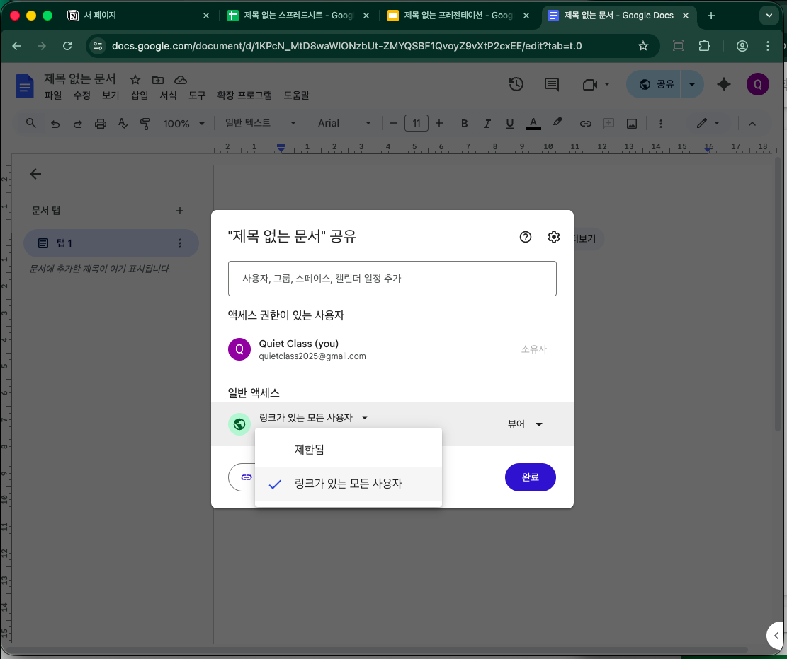
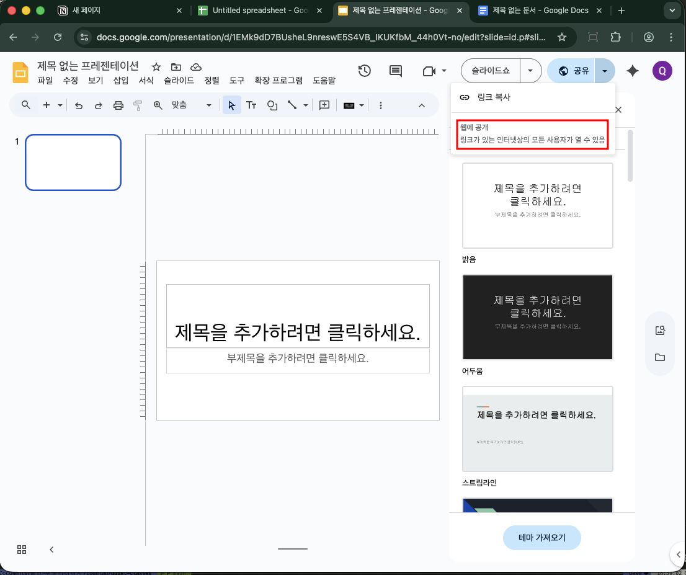
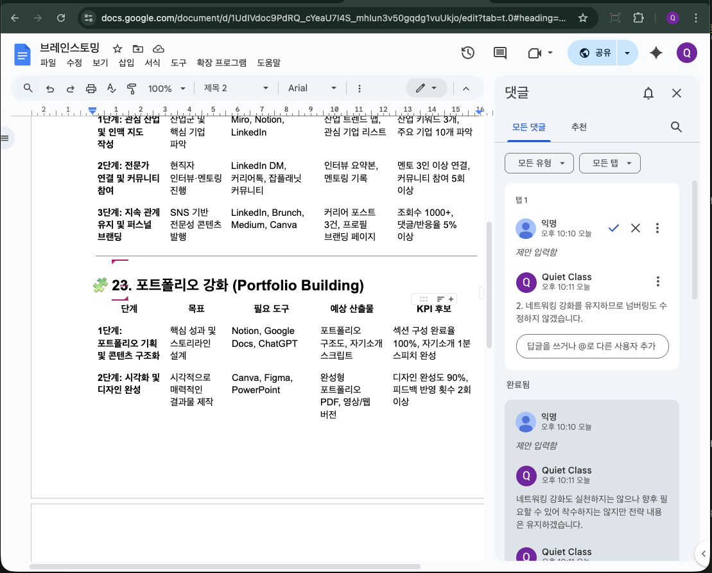
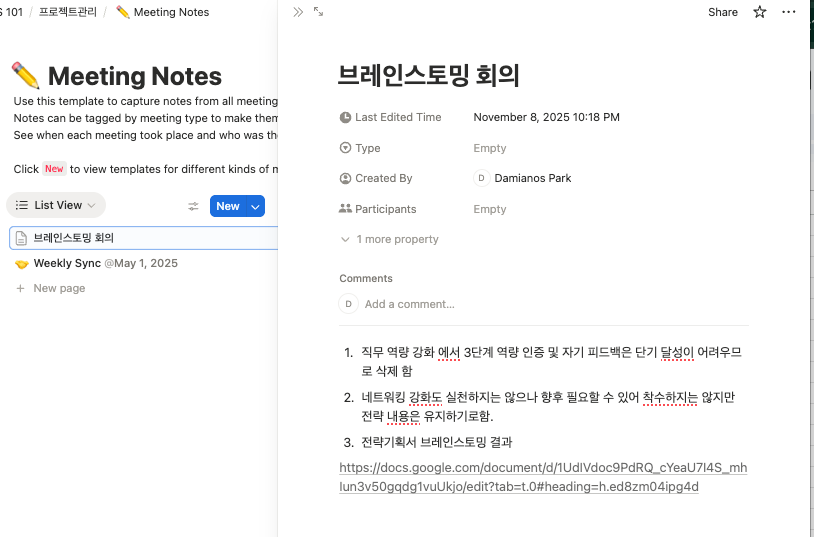

개요
프로젝트 워크플로

4모듈은 "협업과 전략 기획"을 완성하기 위한 프로젝트 기반 수업입니다. 좌측 사이드바 단계에 따라 이동하며 각 실습을 순차적으로 진행하세요.
🎯 학습 목표
- Notion으로 팀 단위의 시간 기반 프로젝트 계획 수립
- Docs·Sheets·Slides를 활용해 기획·데이터·시각화 산출물을 협업 생성
- ChatGPT로 각 단계별 아이디어 생성 → 수정 → 완성
- 프로젝트 진행과 완료 상태를 Notion에서 통합 관리
역할 정리
- A (전략 담당자): 기획 아이데이션·KPI·Slides 총괄
- B (콘텐츠 담당자): 문장 교정, 공유 메시지 관리
- 팀장: Notion 일정·산출물 통합, 회고 수집 및 보고
실습 운영 방식: 실제 팀이 없는 상황을 가정해 한 명이 여러 역할을 수행합니다. 기본 Chrome 창은 팀장 시점으로, 시크릿 창 1은 A 담당자, 시크릿 창 2는 B 담당자처럼 창마다 역할을 고정해 작업하세요. 각 창에서 생성한 Google Workspace 문서는 공유 버튼 → 링크 복사로 서로 전달하며, Notion 페이지에 링크를 모아 교차 확인합니다.
실습 시나리오 (협업 중심)
단계 | 도구 | 활동 | 산출물 | 담당자 |
1. 프로젝트 기획 | Notion | - 팀별 프로젝트 생성 | 프로젝트 관리 페이지 | 팀장 |
2. 브레인스토밍 | ChatGPT + Docs | - ChatGPT로 주제 아이디어 도출 | 1장 기획 문서 | A: 전략 담당자 |
3. 데이터 구성 | ChatGPT + Sheets | - ChatGPT로 KPI 예시 생성 | 1장 KPI 데이터표 | A: 전략 담당자 |
4. 시각 요약 | Slides | - KPI 요약 1장 슬라이드 제작 | 1장 전략 요약 슬라이드 | A: 전략 담당자 |
5. 결과 통합 | Notion | - 각 문서 링크와 완료 시각 기록 | 프로젝트 진행 로그 | 팀장 |
한 명이 세 개의 창을 사용해 역할을 분담합니다. 기본 Chrome 창은 팀장 역할, 시크릿 창 1은 A 담당자, 시크릿 창 2는 B 담당자 전용으로 두고 각 창에서 문서를 작성합니다.
준비 체크리스트
- ✅ 크롬브라우저 준비
- ✅ 구글 계정 준비
- ✅ ChatGpt 가입 : 앞서 1에서 생성한 구글 계정으로 가입
- ✅ Notion 가입완료 : 앞서 생성한 구글 계정으로 가입
- ✅ 기본 Chrome 창에서 Notion 빈 페이지를 만들고 공유 링크를 복사해 둔다.
- ✅ 시크릿 창 1(A)에서 Google Docs 기획 문서를 생성하고 공유 버튼 → 링크 복사 후 Notion에 기록한다.
- ✅ 시크릿 창 1(A)에서 Google Sheets KPI 시트를 생성하고 공유 링크를 복사한다.
- ✅ 시크릿 창 2(B)에서 Google Slides 전략 요약 슬라이드를 생성하고 공유 링크를 복사한다.
- ✅ Notion 페이지 상단에
문서 링크 모음테이블을 만들고 역할·문서 유형·공유 링크를 정리한다.
브라우저 운영 팁
- 시크릿 창은
Shift + Command + N(macOS) 또는Ctrl + Shift + N(Windows)로 연다. - 창 제목에 역할명을 붙여 헷갈리지 않도록 한다.
- 모든 문서는 링크 소지자 보기/댓글 허용으로 설정해 다른 창에서도 접근 가능하게 만든다.
성과물
- 역할별 문서 링크를 정리한 Notion 페이지 스크린샷과 공유 URL을 확보한다.
- Task Tracker에 상태를 완료로 마킹





개요
- Notion에서 새로 성성되어 있는 빈 페이지의 이름을 "프로젝트관리"로 저장한다.
- 페이지 본문에 ‘/' 를 타이핑하고
Database - Inline을 선택하자마자 오른쪽에 뜨는 컨텍스트 메뉴 아래 "Suggested" 영억에서More templates선택하여 template추천 팝업을 띄운다. - template추천 팝업에서
Projects를 선택해서 미리 세팅된 Project 테이블을 생성 - 위 2,3 단계와 유사한 방법으로
Task Tracker도 생성 - 4모듈에서 진행할 내용을 1개 프로젝트로 5모듈에서 진행할 내용을 또 다른 1개 프로젝트로 등록
- 프로젝트 보드와 태스크 보드를 편리하게 관리할 수 있는 모양으로 수정
- 프로젝트와 태스크 Relation 을 맺고 ‘완료율' 롤업과 ‘상태(Auto)' Formula 컬럼 만들어 프로젝트의 작업 상태 진행율과 상태 추적하기
- 프롬프트
진척도 필드가 0 이면 상태필드가 시작전 으로 표시되고 0보다 크면 작업중, 그리고 100%면 완료로 표시되도록 formula작성해, 이 때 시작전은 회색 배경의 칩, 작업중은 파란색 배경의 칩, 완료는 초록색 배경의 일반적인 상태 표현할 때 사용하는 좌우 옆면이 둥근 칩으로 표시되도록 Status type으로 표현되도록 작성해- Notion Formula
ifs( /* Show "not started" with gray background when progress is 0 */ empty(prop("진척도")) or prop("진척도") == 0, style("시작전", "b", "gray_background"), /* Show "completed" with green background when progress is 100 */ prop("진척도") == 100, style("완료", "b", "green_background"), /* Show "in progress" with blue background for any other value */ style("작업중", "b", "blue_background") ) - 아래 프로젝트 계획 실습 시나리오의 내용을 기반으로 프로젝트 보드에 Task들을 등록하여 계확을 완료하고 이후부터 진행하는 실습은 각 태스크의 순서대로 진행
프로젝트 계획 실습 시나리오 (협업 중심)
단계 | 도구 | 활동 | 산출물 | 담당자 |
1. 프로젝트 기획 | Notion | - 팀별 프로젝트 생성 | 프로젝트 관리 페이지 | 팀장: PM |
2. 브레인스토밍 | ChatGPT + Docs | - ChatGPT로 주제 아이디어 도출 | 1장 기획 문서 | A: 전략 담당자 |
3. 데이터 구성 | ChatGPT + Sheets | - ChatGPT로 KPI 예시 생성 | 1장 KPI 데이터표 | A: 전략 담당자 |
4. 시각 요약 | Slides | - KPI 요약 1장 슬라이드 제작 | 1장 전략 요약 슬라이드 | A: 전략 담당자 |
5. 결과 통합 | Notion | - 각 문서 링크와 완료 시각 기록 | 프로젝트 진행 로그 | 팀장 |
성과물
프로젝트 보드및태스크 트래커테이블이 완성된 Notion 페이지- Task Tracker에 상태를 완료로 마킹

A 담당자가 ChatGPT와 Google Docs로 전략 기획 아이디어를 생성하고 협업 피드백을 반영합니다.
실습 절차
- ChatGPT에 아래 프롬프트를 입력합니다.
대학생 취업 전략 프로젝트를 위해 직무 역량·네트워킹·포트폴리오 강화를 각각 3단계 실행 계획으로 제안해줘. 각 단계에 필요 도구, 예상 산출물, KPI 후보를 포함해줘. - 출력 결과를 Docs 템플릿에 붙여넣고 제안 모드로 전환합니다.
- B 담당자와 팀장은 댓글로 보완 의견을 남기고 해결된 항목은 "해결됨" 처리합니다.
- 버전 이력에 "브레인스토밍 확정본"을 저장한 뒤 링크를 Notion 프로젝트 보드 행에 첨부합니다.



성과물
- Docs 최종 링크와 핵심 의사결정 요약 3줄을 Notion 회의록 섹션에 기록합니다.
- Task Tracker에 상태를 완료로 마킹

A 담당자가 KPI를 정리하고 Google Sheets에서 시각화 대시보드를 구축합니다.
- ChatGPT에 아래 프롬프트를 입력해 TSV 표 초안을 생성합니다. 다음의 두 프롬프트 중 하나를 선택해서 진행해보세요.
- A 안
대학생 취업 전략 프로젝트를 위해 직무 역량·네트워킹·포트폴리오 강화를 각각 3단계 실행 계획으로 제안해줘. 열은 목표 지표명 측정 방법 기준값 목표값 현재값 측정 주기 책임자로 구성하고, 현재값은 목표값 대비 실제 달성 수치를 임의로 채워 TSV(탭 구분) 형식으로 출력해줘.- B안
대학생 취업 전략 프로젝트를 위해 직무 역량·네트워킹·포트폴리오 강화를 각각 3단계 실행 계획으로 제안해줘. 1. 열은 다음과 같은 양식으로 해서 색성하고 TSV(탭 구분) 형식으로 출력해줘. 2. 지표명에는 측정 단위가 건수인지 %인지 횟수인지 등도 괄호안에 묘사해. 3. 기준값, 목표값, 현재값은 지표명이나 측정 방법에서 정의한 값에 해당하는 임의의 값을 측정 단위 없이 숫자로만 채워. --- 목표,지표명, 측정 방법,기준값,목표값,현재값,측정 주기,책임자 - 시크릿 창 1(A)에서 Google Sheets 새 문서를 열고(A1 셀 선택) TSV 결과를 붙여넣은 뒤, 헤더 행이
목표, 지표명, 측정 방법, 기준값, 목표값, 현재값, 측정 주기, 책임자순으로 들어갔는지 확인합니다. - 헤더 행에서
목표값오른쪽 열을 선택하고 열 삽입 → 오른쪽에 열 삽입을 눌러현재 진행률열을 추가한 뒤,현재 진행률열의 첫 번째 데이터 셀(예: G2)에=IFERROR($F2/$E2,"")공식을 입력하고 아래로 드래그합니다. - 상단 메뉴 형식 → 숫자 → 백분율을 선택해
현재 진행률열을 퍼센트 형식으로 바꾸고, 이어서 형식 → 조건부 서식 → 색상 눈금을 선택해 저조(빨강)~목표 달성(초록) 색상을 적용합니다. - 상단 메뉴 데이터 → 필터 만들기로 필터를 추가한 뒤,
책임자또는측정 주기별로 정렬 가능한 드롭다운을 확인합니다. - 삽입 → 차트 선택 후, 막대형 차트(가로막대)로 변경후 데이터 범위를
A1:G10(기준값·목표값·현재값 포함) 지정합니다. - 계열에서 기준값, 목표값, 현재값만 남기고 진행률은 제거합니다.
- 맞춤설정 → 볌례에서 텍스트 색상을 본인의 브랜드 컬러로 설정합니다.
실습 팁
- TSV는 각 열이 탭으로 구분되므로 붙여넣기만으로 자동 분리됩니다. CSV(쉼표 구분)보다 빠르고 정렬이 깨지지 않습니다.
- 조건부 서식 규칙을 추가할 때
형식 → 조건부 서식 → 색상 스케일을 선택하면 수치에 따라 색상이 자동 적용됩니다. - 차트는
삽입 → 차트이후 오른쪽 패널에서사용자 지정 → 범례로 이동해 글씨체·색상을 프로젝트 톤에 맞출 수 있습니다.
성과물
- Sheets 공유 링크와 차트 URL을 Docs·Notion 프로젝트 보드 행에 첨부합니다.
- Task Tracker에 상태를 완료로 마킹

A 담당자가 Google Slides 한 장으로 전략 스토리를 시각화합니다.
- Slides에서 삽입 → 차트 → 시트에서를 클릭하고 앞 단계에서 만든 KPI 시트를 선택합니다.
스프레드시트로 연결체크박스를 확인해 Sheets와 실시간 연동을 유지하고가져오기버튼을 누릅니다. - 슬라이드 상단에 "취업 전략 진행 요약 " 제목 을 넣고 왼쪽에 이 차트를 배치 시킨 뒤, 삽입 → 도형 → 직사각형을 이용해 왼쪽에 전체 전략의 진행 현황을 요약해 넣습니다.
- 작업 후 파일 → 버전 기록 → 현재 버전을 이름 지정을 선택해
전략 요약 v1으로 저장하고, 오른쪽 상단 공유 버튼에서링크 있는 모든 사용자를 댓글 가능으로 설정합니다.
성과물
- Slides 공유 링크와
파일 → 다운로드 → PDF 문서(.pdf)로 내려받은 파일을 Notion 회고 섹션에/파일블록으로 업로드합니다. - Task Tracker에 상태를 완료로 마킹

모든 산출물을 Notion 프로젝트 페이지에 정확하게 연결하고 회고 로그를 정리합니다.
프로젝트 보드에서 각 Task 행의Attach file속성에 Docs·Sheets·Slides 공유 URL을 붙여넣습니다.Attache file속성에 첨부할 PDF, 이미지 등의 산출물을 업로드 방식으로 첨부하고 완료로 마킹하지 못했으면 해당 작업의상태컬럼(속성) 을 완료로 업데이트합니다.- 페이지 하단에
/database를 입려한 후 리스트업 되는 항목들 중Database - inlinee를 선택해서new empty datasource를 선택해서 빈 데이터베이스를 만들고 제목은 "회고"로 작성합니다 - Name 필드명을
작성자로수정하고, 그 오른쪽 에 Select type의 필드를구분(Keep/Problem/Try)으로 추가한 뒤 ,링크속성을 추가하여 산출물의 링크를 기록할 수 있게 합니다. - 프로젝트 종료 단계 이므로 Keep,Problem,Try로 마킹하고 그 이유와 해당하는 내용(산출물)이 무엇인지 link를 기록
성과물
- 최신 상태의 Notion 공유 링크와
회고(Log)데이터베이스 요약 3줄을 담당 교수님께 전달합니다. - Task Tracker에 상태를 완료로 마킹